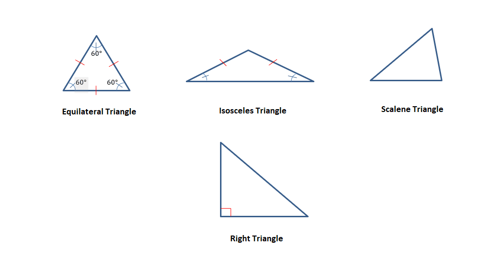
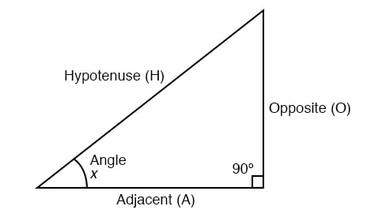

Study Network
Your friendly guide to mastering math
Home
Algebra
Trigonometry
Precalculus
Quiz
Contact

Triangle Classifications: Equilateral, Isosceles, Scalene, and Right.

SOH-CAH-TOA: the basis of trigonometric functions.
The Unit Circle connects angles to coordinates for sine & cosine.